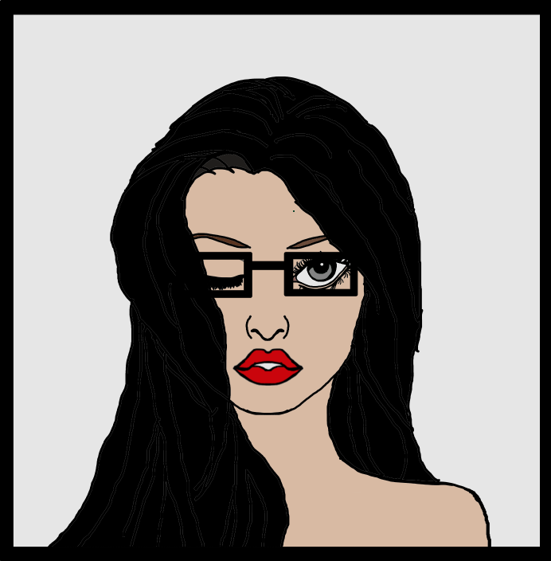

Heres a drawing done by the police depicting what I look like according to my character sheet... Who knows if its true but I thought it was quiet cute^^
My name is █████ ████████, but that name changes often. I am a 21 year old girl who was born in Venice, Italy. I was 7 when we moved to Johanesburg, meaning I still kind of have my Italian accent with me, and I am currently studying Medicine at █████, and I currently work part time as a Librarian. At first glance I appear to be a normal girl until you realise that my family are all Assassins, me included ^^. This is why I'll often speak about how temporary my Email, Number, Name and occupation might really be. I could be telling the truth or Maria might not even be my real name. Regardless I hope you'll stick with me to see where this goes and maybe by the end of it you can deduce who I really am.
As a kid I always wanted to be a Vet now im studying studying Medicine not only because I want to help people but having Medical knowledge can be useful, you can guess why. I work part time as a Librarian not only because of the pay but mostly because I love books! It doesn't matter what kind of book I'll probably love it, there is allot you can learn from literature. I also was not lying about the fact that I appear as a normal girl, infact I look so non threatening you wouldn't belive I could hurt a fly. I display the demeanour of a shy fragile indivdual as to not draw suspicion, I mean I even wear glasses not as ruse but because I am actually quite blind without it. This being said I give myself away with the scar on my ███, the ██████ ██████ on my arm and the fact that no matter rain or shine I always keep an umbrella with me, but is it really just an umbrella. Answer it's not ^^.
My family may be Assassisn but I refuse to accept any contracts with out a good reason, I belive that those who abuse their power to hurt and ruin other people, animals or the enviroment should be the ones who get what they deserve> My brother belived that an taught me that before he vanished after a falling out with my family. This all leads to the following questions Why exactly did I decide to make this blog site? Isn't there a risk that I might be sharing too much or that because of these blogs I might get caught? Not really a worry for me, sometimes working in a library has its benefits. Such as the fact that I've reading quiet allot on thechnology and the internet and this is the main reason I've created this blog space. My aim is to help you the reader to learn something new, something that you can use to protect yourself or to make you that more comfortable with using the internet. You should be able to arm yourself with knowledge such as how an Assassin arms themselves with weapons.